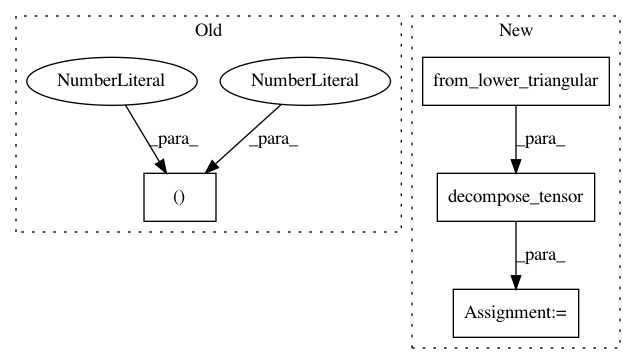

fa786e5f2a8016725991cf2d02eebe6368dc04b3,dipy/reconst/dti.py,,wls_fit_tensor,#Any#Any#,1154
Before Change
tol = 1e-6
data = np.asarray(data)
data_flat = data.reshape((-1, data.shape[-1]))
dti_params = np.empty((len(data_flat), 4, 3))
//obtain OLS fitting matrix
//U,S,V = np.linalg.svd(design_matrix, False)
After Change
log_s = np.log(data)
w = np.exp(np.einsum("...ij,...j", ols_fit, log_s))
evals, evecs = decompose_tensor(
from_lower_triangular(
np.einsum("...ij,...j",
pinv_vec(design_matrix * w[..., None]),
w * log_s)
),
min_diffusivity=tol / -design_matrix.min()
)
dti_params = np.concatenate((evals[..., None, :], evecs), axis=-2)
return dti_params.reshape(data.shape[:-1] + (12,))
In pattern: SUPERPATTERN
Frequency: 3
Non-data size: 4
Instances
Project Name: nipy/dipy
Commit Name: fa786e5f2a8016725991cf2d02eebe6368dc04b3
Time: 2015-10-15
Author: dimrozakis@gmail.com
File Name: dipy/reconst/dti.py
Class Name:
Method Name: wls_fit_tensor
Project Name: nipy/dipy
Commit Name: 4f3da275037d4fe3108039fdbfc03b2f81fbee8c
Time: 2015-10-15
Author: dimrozakis@gmail.com
File Name: dipy/reconst/dti.py
Class Name:
Method Name: ols_fit_tensor
Project Name: nipy/dipy
Commit Name: ed2b80836fb92142143d8b7702d5519761671cf5
Time: 2015-07-08
Author: rafaelnh21@gmail.com
File Name: dipy/reconst/dki.py
Class Name:
Method Name: _ols_iter